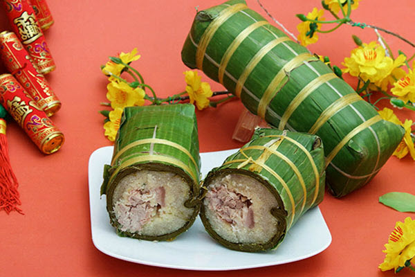
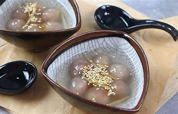
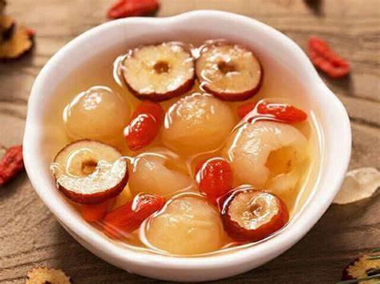

Ẩm thực đa dạng, độc đáo

Phở: Một biểu tượng của ẩm thực Việt Nam, phở là một sự kết hợp hài hòa giữa nước dùng đậm đà, bún mềm mại và thịt gà hoặc bò tươi ngon.
Bánh mì: Bánh mì Việt Nam có vỏ giòn, nhân đa dạng và thường ăn kèm với pate, thịt, rau sống và nước mắm
Gỏi cuốn: Một món ăn nhẹ, tươi mới, được làm từ bánh tráng cuốn nhân tôm, thịt, bún và rau sống.